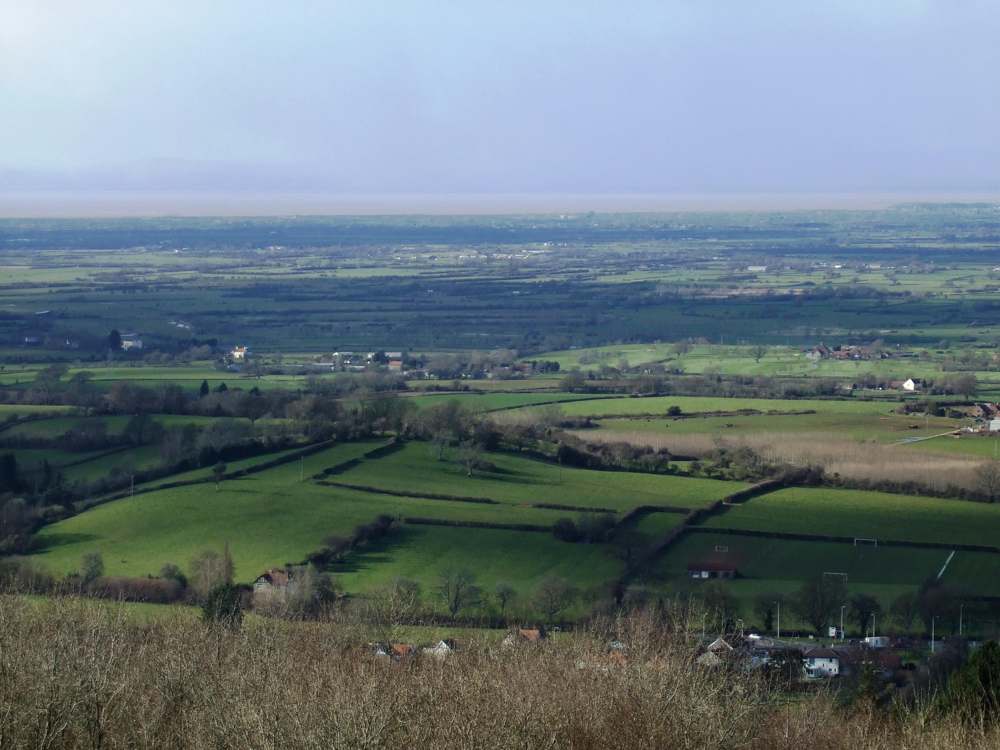
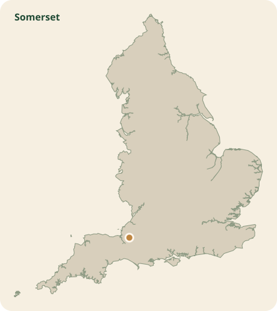
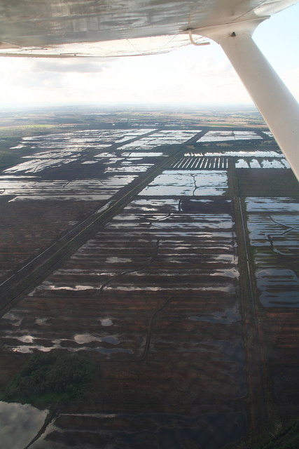
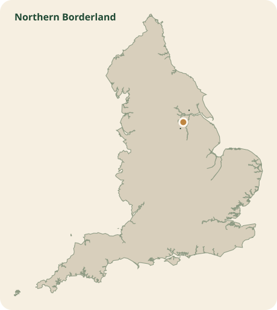

Stable core cells
Thirty-six cells appear in the top 100 under all three objectives, making them the most defensible starting shortlist.
Canonical v6
Rewilding matters because England's landscapes are under pressure from biodiversity loss, fragmentation, climate risk, and the long-term weakening of ecological networks. This project treats rewilding as a practical restoration question at landscape scale: where do national data suggest there may be room to restore ecological function, strengthen habitat networks, and support wider benefits such as resilience, water management, and peat recovery? The main result is not a single best place. It is a core-plus-variants shortlist: stable cells that perform well across scenarios, plus areas that rise or fall when priorities change.
At its broadest, rewilding is about restoring ecological processes and enabling landscapes to regain resilience, connectivity, and complexity. Its importance is not limited to species recovery. It is also tied to climate adaptation, hydrological function, carbon storage, and the long-term capacity of ecosystems to respond to disturbance. In England, that argument aligns closely with the Lawton review's case for ecological networks that are bigger, better, and more joined, and with the later policy language of the Nature Recovery Network.
This platform does not claim to measure all of those benefits directly. Its contribution is more modest and more defensible: it offers a transparent national screening step for asking where the spatial conditions for restoration opportunity appear strongest before local ecological, social, and practical review begins.
Relevant background texts include Perino et al. 2019 on rewilding complex ecosystems, the Lawton review on ecological networks in England, the Nature Recovery Network policy paper, and the recent IPBES Transformative Change summary for policymakers.
Thirty-six cells appear in the top 100 under all three objectives, making them the most defensible starting shortlist.
The balanced top 100 cells form 11 candidate zones rather than a random scatter of isolated winners.
Moderate weight perturbations still keep high top-100 overlap across the scenarios, suggesting the shortlist is not fragile.
The v6 correction makes the shortlist more plausible by favouring places near existing habitat but with restoration headroom, rather than places already dominated by habitat. The result is a more credible national pattern: a shortlist of coherent candidate landscapes in Cornwall, Somerset, and the north Nottinghamshire borderland, alongside scenario-specific variants that rise when the policy lens changes. Read that pattern as a screening outcome rather than a final recommendation.
In this project, an area looks appropriate when it scores well as restoration opportunity rather than simply as existing nature value. The strongest cells tend to sit close to current habitat networks, retain enough headroom for recovery, avoid being dominated by top-grade agricultural constraint, and remain competitive even when the scenario weights are nudged. That is why the shortlist should be read as a set of plausible starting landscapes for deeper review, not as a final map of where rewilding should happen.
The balanced top 100 is especially useful because it resolves into 11 zones, with the top three containing 42 of the 100 cells. That clustering matters: it suggests the model is finding coherent areas with repeated supporting signals, rather than isolated one-off cells created by noise.
Cornwall is the strongest large cluster in the balanced shortlist, with 31 of the top 100 cells grouped into one candidate zone. That matters because the signal is not being created by a single exceptional hex. It is repeated across a wider landscape, which makes the result more persuasive as a landscape-scale screening outcome.
The model favours this zone because the cells combine very high connectivity to existing habitat networks, strong restoration-opportunity scores, and very high agricultural-opportunity values. Mean connectivity is 98.03, mean restoration score is 88.25, and mean agricultural opportunity is 94.84. Habitat share is moderate rather than overwhelming at 9.89%, which supports the intended interpretation: these are not simply places already saturated with habitat, but places near habitat with room for recovery. One Cornwall hex also appears as a strong cross-scenario case study in the validation summary, ranking 4th, 3rd, and 2nd across the three scenario lenses.
The highest-scoring cells geocode near the Blisland and St Neot side of Bodmin Moor, which helps make the zone legible on the ground. Cornwall Council's landscape material describes the wider Cornish landscape through the interaction of geology, habitat diversity, historic field patterns, and nature recovery potential. That is a good fit for how this zone performs in the model: as a mosaic landscape with strong adjacency to existing ecological assets rather than a single isolated restoration parcel.
Somerset appears as a smaller but very strong balanced cluster, with 5 cells and a maximum score of 66.99. What stands out here is how little existing priority habitat is already inside the shortlisted cells: mean habitat share is only 0.42%, while mean connectivity is still high at 95.31 and mean restoration score rises to 94.90. In plain terms, the model sees these cells as sitting close to habitat networks without already being “finished” habitat.
That makes Somerset a particularly clear example of the project's core logic. The model is not just seeking intact habitat. It is seeking recovery headroom. Somerset also matters in the validation notes because one hex from this wider area rises under the nature-first scenario when peat, flood, and biodiversity-related factors matter more. That suggests the wider area is not only a balanced candidate, but also potentially more interesting when ecological restoration objectives are pushed harder.
The top cells geocode close to Meare and Sharpham, placing them within the wider Somerset Levels and Moors landscape. Somerset Council describes this area as a rural, peat-based wetland system crossed by the Tone, Parrett, Axe, and Brue catchments. That present-day landscape character helps explain why the area looks so compatible with the model's wetland, peat, and restoration-opportunity logic.
Nottinghamshire leads the balanced shortlist by maximum score, reaching 67.04 across a 6-cell zone. Its mean habitat share is low at 3.32%, while mean connectivity is 96.69 and mean restoration score is 93.43. The agricultural-opportunity score is also high at 86.67. Together, those numbers describe a place where the model sees strong adjacency to existing habitat and substantial room for restoration, while still appearing relatively workable under the project’s simplified land-use tradeoff lens.
It is also useful that this zone sits outside the very large Cornwall cluster. That helps the shortlist feel genuinely national rather than dominated by one corner of England. For the write-up, it shows that the model is surfacing multiple landscape types with similar underlying restoration logic.
The top-scoring cells in this zone geocode close to Hatfield on the north Nottinghamshire borderland, which suggests a landscape closer to the Humberhead peatlands fringe than to the county interior. Official planning material in the region describes Hatfield Moors as a remnant of once-extensive bog and fen peatlands and notes ongoing restoration of degraded raised bog. That context fits the model well: a lowland peat and wetland-edge landscape where restoration opportunity is plausible, but where county labels alone do not tell the full story.
Not every important place has to sit inside the balanced top cluster story. The validation case studies show a Wigan hex that rises strongly under the lower-conflict scenario, ranking 26th there but only 133rd in the balanced view. Its strongest signals are lower agricultural conflict at 100.0, connectivity at 98.9, and habitat mosaic at 95.9.
This is a helpful example for the platform because it shows why the site should not present one “winner.” Some places are more compelling when the decision lens shifts toward ease of delivery or reduced agricultural tension. That is precisely what the scenario design is for: making different priorities visible rather than burying them inside one blended score.
The safest wording is that these locations are promising candidate areas for further investigation. The model suggests they are appropriate for closer review because they repeatedly combine habitat proximity, restoration headroom, and relatively favourable tradeoff signals. It does not show that rewilding is definitely feasible there, socially acceptable there, or ecologically optimal there.
For each location, the next real-world questions would be local: ownership pattern, farming system, community support, protected-site constraints, hydrology, species evidence, and whether the area aligns with local nature recovery priorities. The platform is strongest when it makes that next step explicit.
The shortlisted zones are not abstract coloured cells. They correspond to recognisable living landscapes with distinct present-day character. Adding that context helps the model read more like a grounded spatial argument and less like an empty ranking exercise.

The strongest Cornwall cells sit near the Bodmin Moor fringe, where moorland, rough grazing, hedges, and habitat mosaics create a landscape that already reads as ecologically connected but still open to further recovery.
Cornwall Council landscape character and Wikimedia Commons photo.

The top Somerset cells geocode near Meare and Sharpham, in a peat-based lowland wetland landscape of drains, pasture, and floodplain context. That present-day character aligns closely with the model's peat and hydrological opportunity signals.

Somerset Levels and Moors overview and Wikimedia Commons photo.

The highest cells in the northern zone fall close to Hatfield and the edge of Hatfield Moors, suggesting a borderland peat landscape of drained lowlands and raised bog restoration rather than a generic county-wide Nottinghamshire signal.

Regional planning reference to Hatfield Moors restoration and Wikimedia Commons photo.
{kind=link}
{kind=link}
{kind=link}